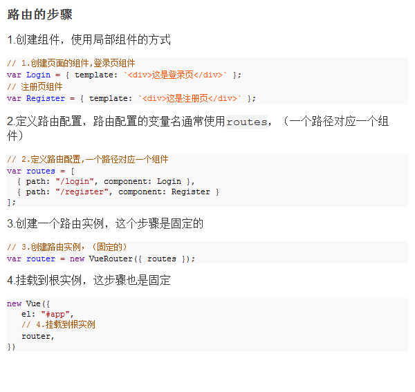

Vue核心概念
每个 Vue 应用都是通过用Vue构造函数创建一个Vue 实例开始，再传入一个选项对象来创建你想要的行为。一个 Vue 应用由一个通过 new Vue 创建的根 Vue 实例，以及可选的嵌套的、可复用的组件树组成，并通过Vue实例名el搭载在html上。
数据绑定
Vue.js使用了基于HTML的模版语法，即特性做了增强的HTML，声明式地将DOM绑与Vue实例的数据绑定，数据绑定最常见的形式就是使用“Mustache”语法 (双大括号)，Mustache 语法不能作用在 HTML 特性上，遇到这种情况应该使用 v-bind 指令。
插值绑定，<p>{{ message }}<p>
文本绑定，v-text='message'
富文本绑定，v-html='html'
属性绑定，v-bind:(缩写为:)style='style'
条件绑定，v-if/v-show=' '
循环绑定，v-for=' '
双向绑定，v-model=' '
事件绑定，v-on:(缩写为:@)事件名=' '
var vm=new Vue({
el:#app,
data:{message:'hello',
html:"<div style='color:red'> hello <div>",
style:'color:red'},
..., })//DOM与数据层绑定

点击页面效果
Vue组件
自定义的html元素，封装可重用js代码,Vue.component('name',{template: ,data: ,props: , methods: ,computed:,})
vue组件的核心元素:
1、模板（template）：模板声明了数据和最终展现给用户的DOM之间的映射关系。
2、初始数据（data）：一个组件的初始数据状态。
3、接受的外部参数(props)：组件之间通过参数来进行数据的传递和共享。
4、方法（methods）：对数据的改动操作一般都在组件的方法内进行。
props属性
组件实例的作用域是孤立的，组件传值需要props选项。
父子组件的通信可以总结为 props down, events up 。父组件通过 props 向下传递数据给子组件，子组件通过 events 给父组件发送消息。
计算属性：computed:{}
模板语法是简单的声明式逻辑，只能是当个js表达式，复杂逻辑，应当使用计算属性
路由传参
根据不同的路径显示不同的组件，由vue-router库支持。每个组件都可以使用$route.query获取路由的问号后面的参数
router-view组件显示占位符，把匹配到的组件显示在当前位置。
router-link组件相当于a标签，使用to属性指定链接。

路由传参query与params :http://localhost:8080/#/main/child?name=haha
静态路由：这种传参方式相当于url拼接参数
main.vue通过query传递参数
<router-link :to="{ path:'/main/child', query: { name: 'haha'} }"> 跳转 </router-link >
child.vue通过$route.query获取参数
<div>{{ this.$route.query.name }}</div>
动态路由：对象属性值
main.vue通过params传递参数
<router-link :to="{ name: 'child', params: { name: 'haha' }}"> 跳转</router-link>
child.vue通过$route.params获取参数
<div>{{ this.$route.params.name }}</div>
query要用path来引入，params要用name来引入，接收参数类似，分别是
this.$route.query.name和this.$route.params.name。
query更加类似于ajax中get传参，params则类似于post，前者在浏览器地址栏中显示参数，后者则不显示.
生命周期
Vue实例有一个完整的生命周期，从开始创建、初始化数据、编译模板、挂载Dom、渲染→更新→渲染、卸载等一系列过程，我们称这是Vue的生命周期。vue生命周期到了哪一步就直接执行对应钩子函数里面的代码，无需手动去执行。
数据初始化常在created与mounted选项中作出处理。created是在实例创建完成后被立即调用，挂载阶段还没开始，$el 属性目前不可见，模板还没有被渲染成html，这时候通过id什么的去查找页面元素是找不到的。mounted是用来向后端发起请求拿到数据以后做一些业务处理。挂载完成以后也就是模板渲染完成以后才会被调用。